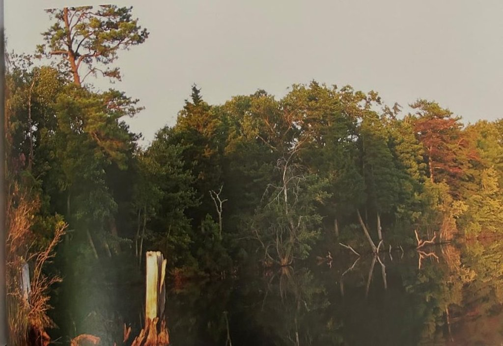
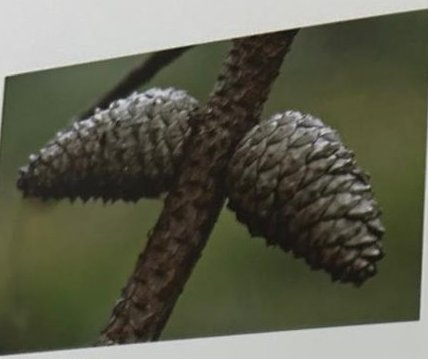

Groepen › Nieuwe Wereld
19. New Jersey, Piedmont plateau en kustvlakte

Aanleunend bij de stadsagglomeraties van New York en Philadelphia, is New Jersey een van de kleinere en dichter bevolkte staten in de USA. Toch is nog 40% van de oppervlakte bebost, waarbij het bosbeeld verschillend is tussen het westelijke heuvelland opgaand in de Appalachen en de oostelijke kustvlakte met haar Pine Barrens. In de dennenbossen neemt de Pekden een vooraanstaande positie in. Hij is één van de weinige naaldhoutsoorten die nieuwe scheuten kan ontwikkelen op de stam, en dus zichzelf kan verjongen wanneer hij afgebroken is. Ook in Europa heeft de houtsoort onder de benaming pitch pine enige tijd succes gekend voor binnenhuisinrichting : vloeren, lambriseringen, deuren, meubels. In de oostelijke loofhoutbossen staan Moeraseik en Scharlaken eik, beide rode eiken met dieper ingesneden bladlobben dan de welbekende Amerikaanse eik. Onderaan de arboretumgroep, bij de weiderand, staan nog enkele merkwaardige soorten. De Zwarte tupelo kleurt uitbundig oranjerood in de herfst. De Sassafras met zijn eigenaardige één-, twee- of drielobbige blad schijnt allerlei beloften in te houden voor de farmacie. De Persimoen heeft vreemde vruchten die jammer genoeg niet zo groot en smakelijk zijn als die van zijn Aziatische broer, de Kaki.
Uit het boek
2,02 ha · 35 soorten · 866 bomen
- De Pine Barrens: volg het pad door het midden voor de pekdennen. Een sikkeleik van 1909 meet 340 cm.


Bron: Geografisch Arboretum Tervuren. Een wereldreis rond bomen (2020), p. 172 en volgende.
Deelgroepen
- 19 – New Jersey
Soorten in deze groep (35)
- Acer x freemaniiFreemanesdoorn · 170 bomen
- Quercus rubraAmerikaanse eik · 136 bomen
- Picea rubensRode spar · 95 bomen
- Pinus rigidaPekden · 76 bomen
- Prunus serotinaAmerikaanse vogelkers · 65 bomen
- Betula lentaSuikerberk · 55 bomen
- Quercus coccineaScharlaken eik · 35 bomen
- Quercus palustrisMoeraseik · 33 bomen
- Acer rubrumRode esdoorn · 24 bomen
- Juniperus virginianaVirginische jeneverbes · 24 bomen
- Fraxinus americanaWitte es · 22 bomen
- Sassafras albidumAmerikaanse sassafras · 16 bomen
- Cercis canadensisOost-Amerikaanse judasboom · 15 bomen
- Cephalanthus occidentalisKogelbloem · 13 bomen
- Carpinus species11 bomen
- Acer saccharumSuikeresdoorn · 9 bomen
- Nyssa sylvaticaZwarte tupeloboom · 9 bomen
- Diospyros virginianaPersimoen · 6 bomen
- Tsuga canadensisOost-Amerikaanse hemlockspar · 6 bomen
- Acer saccharinumZilveresdoorn · 5 bomen
- Crataegus uniflora5 bomen
- Pinus speciesden · 5 bomen
- Ulmus rubraRode Iep · 5 bomen
- Lindera benzoin4 bomen
- Quercus falcataSikkeleik · 3 bomen
- Amelanchier canadensisCanadees krentenboompje · 2 bomen
- Betula speciesberk · 2 bomen
- Morus rubraRode Moerbei · 2 bomen
- Platanus x acerifoliaGewone plataan · 2 bomen
- Rosa species2 bomen
- Rubus speciesBraam · 2 bomen
- Betula nigraZwarte berk · 1 boom
- Ptelea trifoliataLederboom · 1 boom
- Quercus species1 boom
- Rhamnus species1 boom
Tekst en foto: arboretum-tervuren.be (Koninklijke Schenking), met toestemming gebruikt.